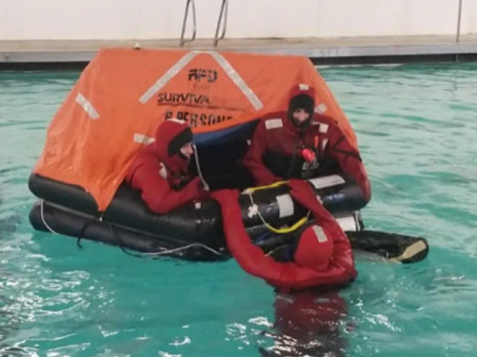
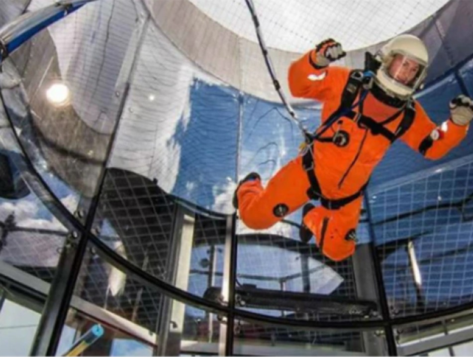

CHaSE
The Center for Human Space Exploration — a research and development facility furthering humanity's sustainable presence in our solar system and beyond.

Furthering Human Space Exploration
The Center for Human Space Exploration (CHaSE) is a research and development facility focused on furthering the sustainable presence of humanity in our solar system and beyond. Founded in 2022, it is our mission to foster the global space community through experiential opportunities.
With access to world-class facilities, we disseminate resources to students, industry, professionals, and the public — building the skills, technologies, and human capacity needed for long-duration spaceflight and off-world habitation.
Current Initiatives
CHaSE is actively developing technologies and training programs to support the future of human spaceflight — from spacesuit operations to life-support system redesign.
Inside CHaSE

Partner With CHaSE
CHaSE welcomes collaborations with space agencies, aerospace companies, universities, and training organizations. Contact us to explore partnerships in astronaut training, life-support R&D, and spacesuit technology.